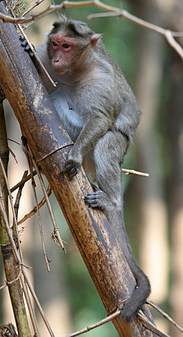

Обезья́ны — четверорукие млекопитающие, наиболее близкие к человеку по строению тела[1] и происхождению,
в широком смысле — все представители отряда приматов (Primates)[2]. Слово «обезьяна» появилось в древнерусском языке как
заимствование из перс. بوزینه — «бузинэ» (возможно также влияние ст.‑слав. о҄пица) и стало широко известно после издания
«Хожения за три моря» Афанасия Никитина. В словаре Д. Н. Ушакова уточняется, что abü zinä в арабском означает «отец блуда»[1].
У большинства обезьян белки глаз обычно чёрные, как и зрачки (у людей — белые, что контрастирует со зрачками). Обезьяны отличаются от
полуобезьян дневным образом жизни, сложным поведением, всеядностью с уклоном в растительноядность. С этим связаны их многие
морфологические особенности, например, сложно устроенный мозг.
Обезьяны или антропоиды или высшие приматы — в более узком смысле — те виды приматов, которые относились к устаревшему ныне подотряду обезьян (Simiæ) или антропоидов (Anthropoidea), противопоставлявшемуся подотряду полуобезьян (Prosimiae)[3][4]. Подотряд обезьян делился на две группы: широконосых (Platyrrhini) — обезьяны Центральной и Южной Америки, узконосых (Catarrhini) — обезьяны Старого Света.
В новой систематике настоящих обезьян выделяют в инфраотряд обезьянообразные и объединяют с долгопятами в подотряд сухоносых приматов (Haplorhini), а полуобезьян (без долгопятов) — в подотряд мокроносых приматов (Strepsirrhini)
Жизнь обезьян.Документальный фильм
Назад